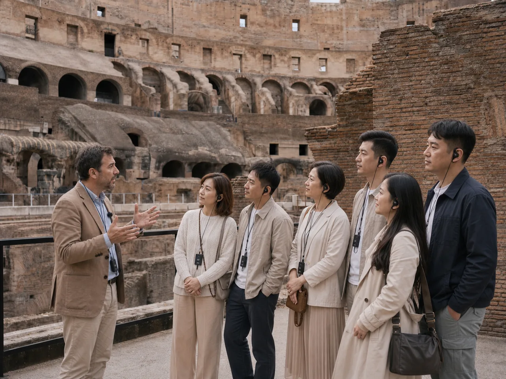
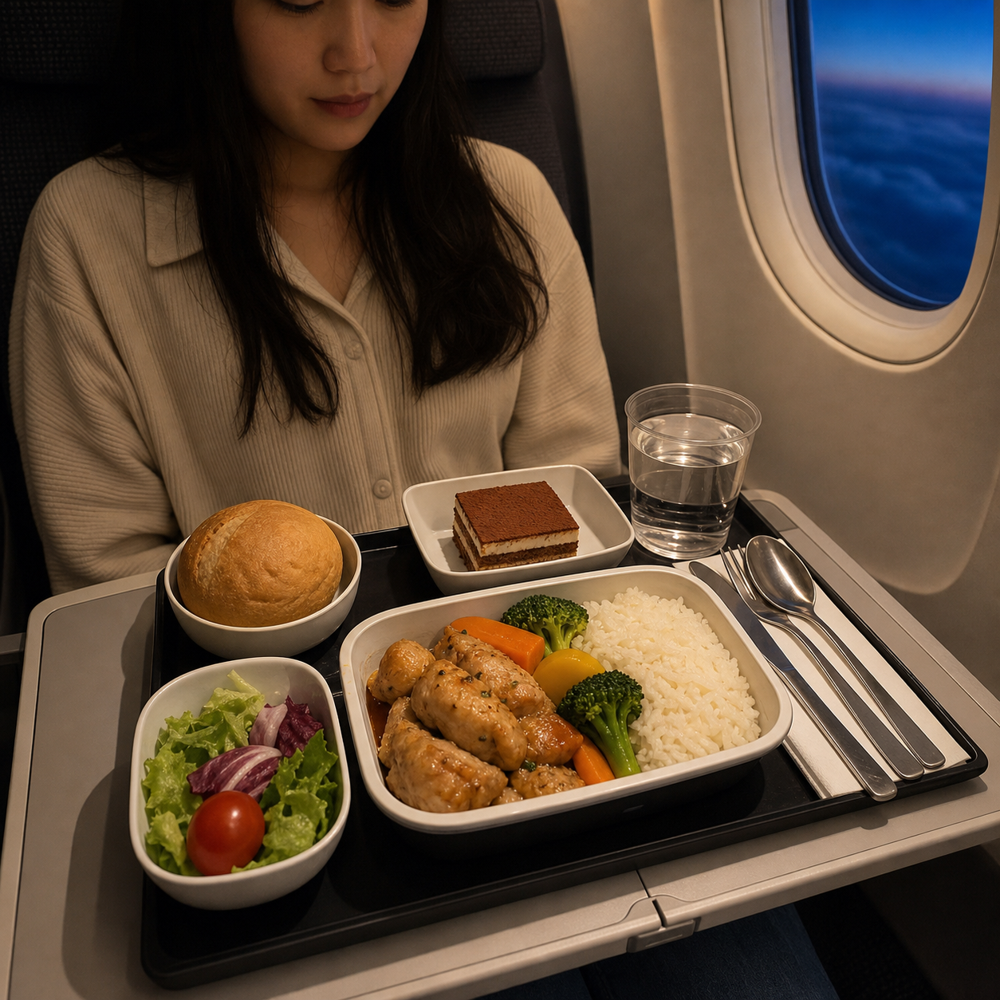
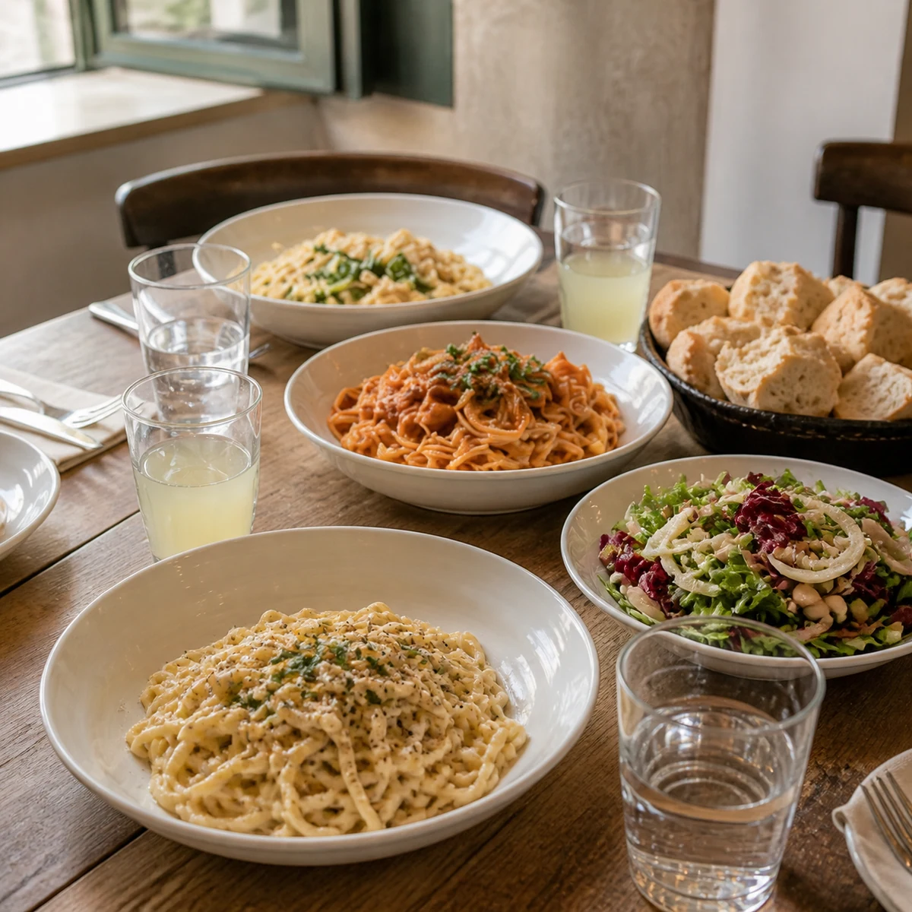
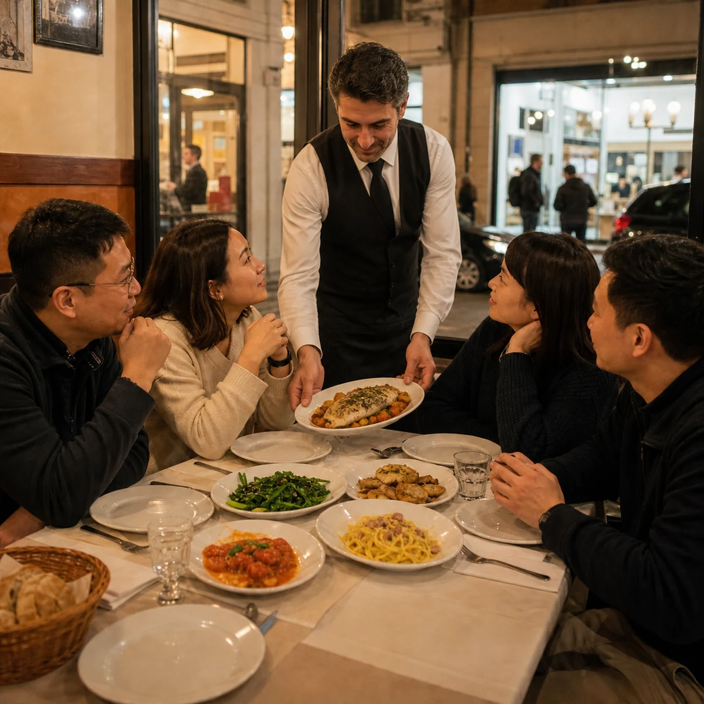
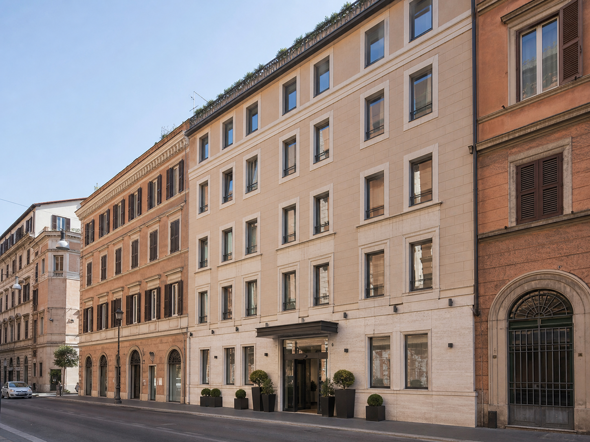
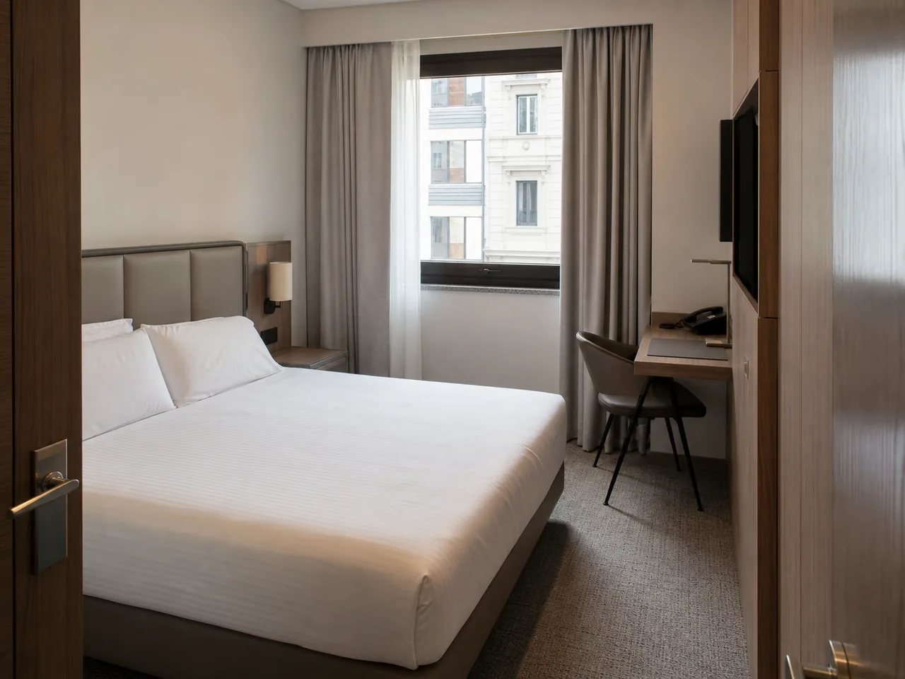
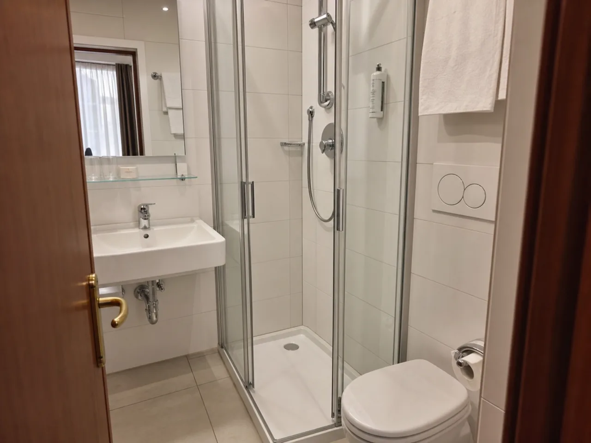

Day 1
羅馬
永恆之城，古羅馬帝國的輝煌榮光
行程

行程
抵達羅馬後，前往古羅馬競技場，為您預約快速通道及專業歷史建築導覽講解，回溯古羅馬時代的往昔榮光
傍晚在許願池，投下一枚硬幣，期待有一天重返這座充滿歷史與回憶的永恆之城



- 餐廳鄰近市區商圈，提供道地義式風味料理，氣氛輕鬆舒適



- 羅馬市區四星 Hotel Bellaroma 或同級
- 《標準雙人房》約25平米，附衛浴設施
- 住宿特色
- 地處羅馬市區，鄰近各大景點，交通便利
- 現代化裝潢設備，乾淨舒適